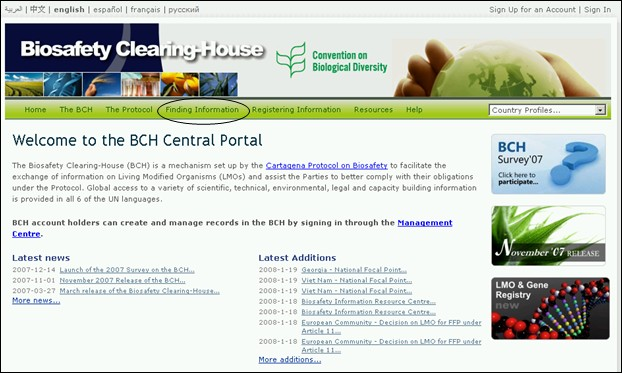

URL: http://bch.cbd.int/database/
Le CEPRB a été crée en vertu de l’article 20 pour faciliter l’échange d’information concernant des OVM. Les besoins pour les types d’information sont listés dans cet Article, et le CEPRB maintient des bases de données avec l’information pertinente. L’accès à cette information est fournie à travers la page Trouver l’information du site web du CEPRB, accessible à travers un lien sur la barre de navigation sur la page d'accueil du CEPRB. Bienvenue au Portail Central du CEPRB.

Figure 1

Figure 2
Cette section permet aux utilisateurs d’avoir accès à une gamme étendue d’information scientifique, technique, environnementale, légale et de création de capacités à partir des bases de données du CEPRB. Les catégories d’information sont listées sur la page Trouver l’information.
L’accès aux diverses catégories d’information est possible depuis un lien dans le menu du côté gauche ou depuis des liens dans le texte sur la page Trouver l’information. Ce module examinera chacune de ces catégories et fournira des directives pour avoir accès à l’information spécifique depuis chaque base de données.